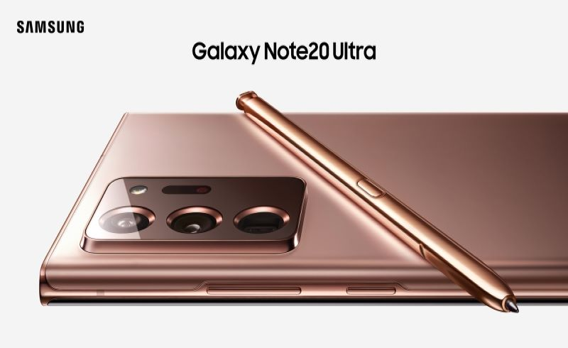
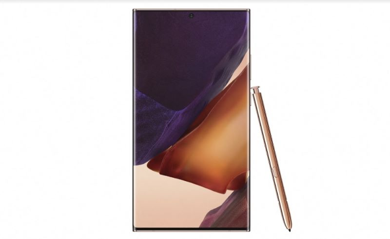

三年前三星在推出 Galaxy S8 與 Note8 系列時，推出了「Samsung Dex Station」這項有趣的週邊，讓手機可以連結大螢幕與 USB 鍵鼠，搖身一變成為如同電腦一般的工作平台。隨著三星手機的持續演進，在 Galaxy Note9 推出時也直接內建「Samsung DeX」功能，只需透過 USB TYPE C 接口輸出至外接螢幕，就可以自動切換為如同視窗系統的操作模式，並可讓手機螢幕轉換為控制滑鼠的觸控板與虛擬鍵盤，實現真正便攜的行動辦公室。
後來在 Galaxy Note10 系列推出後，Samsung DeX 功能進一步升級成為手機連結電腦時也能啟動的一項便利功能，也讓使用者更能輕鬆存取手機內的各類檔案，甚至能快速在電腦與手機間傳輸；而今年的 Galaxy Note20 5G 系列也再次讓 Samsung DeX 升級成為具備「無線傳輸」功能，能更易地與具備智慧連網的電視相互整合。
也因為 Galaxy Note20 5G 系列的新版 Samsung DeX 功能更為全面，因此更為適合作為一個功能完整的行動辦公平台，舉例來說，使用者在不需要攜帶任何筆電、平板的情況下，只需要手機與 USB TYPE C to HDMI 的轉接線，就能在住宿的飯店直接透過手機更高效率的瀏覽工作文件，甚至更方便進行編輯，若是能搭配一把便攜的無線摺疊鍵盤，基本上打字也不成問題。此外，最近幾年也有許多便攜式的外接螢幕，也能搭配 Samsung DeX 的功能使用，甚至直接取代筆電的功能。

透過時尚智慧手錶上先進的健康監控功能，完全掌控自己的健康狀況。它可以輕鬆追蹤你的身體狀態，幫助自己朝著目標前進。
45mm ，NT$14,900元 星幻黑 星幻銀 星霧金

這些時尚的耳機專為搭配或完善 Galaxy Note20 5G 和 Note20 Ultra 5G 而設計，可輕鬆同步到你的裝置，並提供清晰、豐富的聲音，讓你沉浸在串流媒體和遊戲中，而且足夠舒適，可以連續使用數小時。
NT$5,990元 星霧金 星幻黑 星幻紅 星幻白

選擇設定充電方式：將其放平或立起。在立起位置，有兩個線圈可以讓你以橫向或縱向方式為手機充電，以便讓你在聊天或播放視訊時保持最佳舒適狀態。全部由閃電快充 2.0 和 Qi 相容性提供支援。
黑 白

較大的 LED 顯示區增強了時間和圖示的可見性，觸控互動使你能夠在不開啟翻蓋的情況下處理通知。它可以保護手機的正面和背面，而抗菌技術有助於為你提供保護，內部口袋可以放行動支付卡或銀行卡。
黑 銀 銅棕